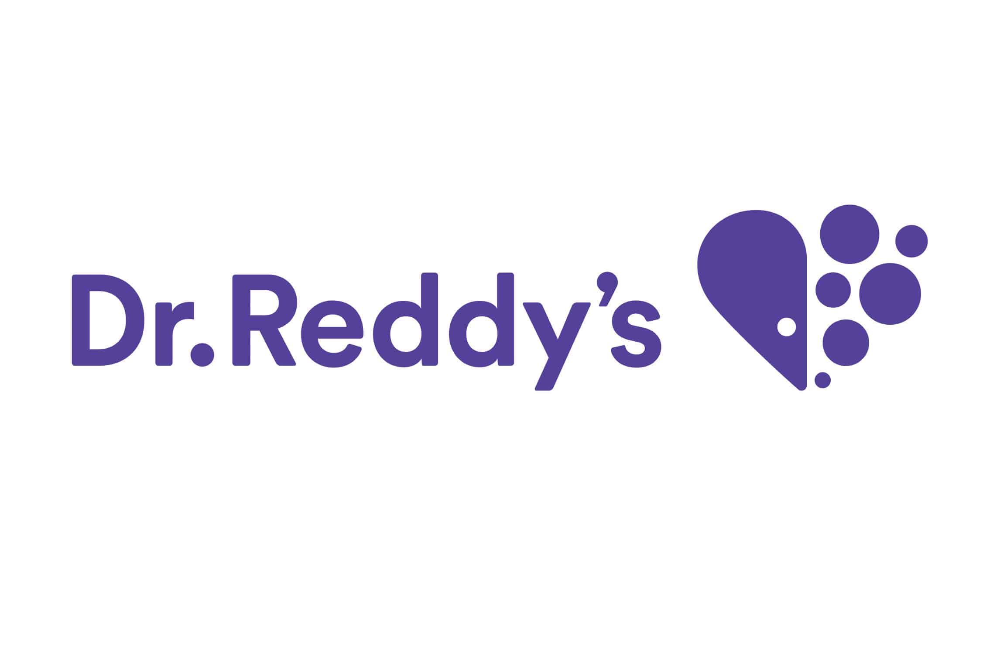

A Mechanical Engineer adopting every other Engineering & pursuing trivial achievements ;)
Indian Institute of Technology Kanpur
Contact MeI am a final-year Mechanical Engineering undergraduate (8.14/10) at the Indian Institute of Technology, Kanpur. With a passion for technology and innovation, I have worked on various interdisciplinary projects ranging from Mechanical to Software Engineering. My areas of expertise include Algorithms, Data Structures, Machine Learning, Web Development, Product Management, and Algorithmic Trading. I am constantly seeking new challenges that allow me to combine my technical skills and creative thinking to deliver high-impact solutions. Yes, more often you can see me playing Badminton, Sudoku, Guitar & Chess.
May 2024 - Jul 2024
May 2023 - Sep 2023
May 2023 - Jul 2023
Mentor: Dr. Tushar Sandhan, Professor of Electrical Engineering, IIT Kanpur
Jul 2024 - Oct 2024
Dec 2023 - Jan 2024
Jan 2023 - May 2023
Dec 2022 - May 2023
Jan 2023 - May 2023
Aug 2024 - Sept 2024
Jun 2022 - Jul 2022
Felicitated with a Certificate of Appreciation by Deputy Director, IIT Kanpur for recognition as Assistant Placement Coordinator.